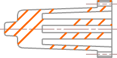
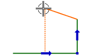
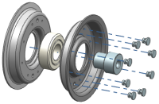

Glossary
A
active dimension
Dimensional constraint that controls sketch geometry.
active group
Group in which sketch curves are currently being created.
adaptive shell
Shelled body created in History-free mode. The body consists of a wall thickness value and a collection of shell relations between its selected shell faces and its partner faces.
ancestor
File containing the source geometry that is directly or indirectly linked to the selected object.
anchor point
(Modeling and Sketching) Intersection point of two end tangent vectors in a general conic.
(Drafting) Reference point for positioning a Drafting symbol or a Drafting view. The anchor point for a symbol is where a leader line attaches to the symbol.
area fill
Pattern of lines used to fill a defined boundary in a drawing. An area fill is used to indicate a specific type of material.

array
Series of features typically appearing in a rectangular or radial pattern.
array
Series of features typically appearing in a rectangular or radial pattern.
associative point
Point that is related to existing geometry. When the existing geometry is changed, the associative point updates so it still coincides with the existing geometry.
associativity
Relationships between individual portions of a model. Changes to the parent are propagated to the children.
auxiliary view
Drawing view projected from an existing view perpendicular to an angular hinge line.
B
base view
Modeling view imported into a drawing. The base view can be a stand–alone view or a parent view for other derived view types, such as a section view.
bend segment
Portion of a section line that connects multiple cut segments in a drawing.

blend
Feature which creates convex or concave rounded transitions between the faces of a body.
break-out section view
View with a portion of the part interior shown within a boundary of curves in a drawing.
broken view
Compressed view that removes a portion of the model between two break curves in a drawing.
C
centerline
Drafting symbol consisting of intermittent long and short lines used to bisect geometry into equal parts.
component
Term used for a part that is a member of an assembly. A component could be a subassembly consisting of lower-level parts.

constraint
(Modeling) Relationship which defines the relative position between objects. Assembly constraints are used to position components in an assembly.

(Sketching) Geometric and dimensional design rules applied to sketch geometry.
crosshatch
Pattern of single strokes or lines used to fill between a defined boundary in a drawing view. Crosshatches are often used to indicate specific types of material.

CSYS
Abbreviation for coordinate system.
cut segment
Portion of a section line that defines a cutting plane in a drawing view.
cylindrical dimension
Dimension measuring the diametral distance between two objects or point positions with an appended diameter symbol.
D
detail view
Child view with circular, rectangular, or user–defined boundary which contains an enlarged portion of an already existing drawing view.
drafting view
Also referred to as drawing member view.
Standard orthographic view created from a model view, or a view of 2D curves that represent model geometry. A drafting view contains drawing objects. It is listed in the Part Navigator under the associated Sheet node.
drawing sheet
View that contains drafting views and drawing border objects. Drawing sheet views are listed in the Part Navigator under the associated Drawing node.
drawing view
Empty view used to manually create a sketch instead of displaying an associative base view of a model.
E
extension line
Line that connects a dimension to the object being dimensioned.
extracted edge
3D representation of a visible edge that is associative to the parent component. An extracted edge view does not contain the entire model. Extracted edges are used to improve the view regeneration performance of the drawings of complex models, such as large assemblies.
F
faceted representation
Lightweight approximation of the faces that represent the real model. Faceted representations are used to facilitate quick regeneration of hidden line views.
folded section view
View with a multiple-segment cutting section, displayed as if the cutting section was unfolded.

G
Gn continuity
Also called Cn continuity.
Degree of continuity between two segments of a curve or surface. G0 means the segments are connected at a point. G1 means the segments are tangent. G2 means the segments have the same curvature at the connecting point.
H
helper line
Temporary dotted line that indicates alignment of objects. In Drafting, helper lines are used to align notes, labels, dimensions, symbols, and views. In Modeling, helper lines are used to align the control points of curves. In sketching, helper lines are used to align curves as you sketch.

hinge line
Line used as a reference to rotate a view in proper orthographic space in a drawing.
I
Inferred
Option that allows the software to determine the method to use for a given operation. Dimensions, planes, vectors, and points can be created by letting the software infer an appropriate method. The Inferred method is often the default method.
instance
Shape-linked feature, similar to a copy. All instances of a feature are associated, and updated parameters for the feature are reflected in every instance of the feature.
instance
Shape-linked feature, similar to a copy. All instances of a feature are associated, and updated parameters for the feature are reflected in every instance of the feature.
internal sketch
Sketch that is only available for edit from the owning feature, such as an extrude feature. An internal sketch does not appear as a feature in the Part Navigator.
K
knot point
Point where B-spline segments connect.
L
layer
Method to control visibility of objects in a model in order to simplify the display. Layers can be used to organize objects by their purpose. For example, sheet bodies or solid bodies used for constructing features can be stored on a hidden layer. Only one layer can be the work layer at a time.
layout
Collection of views arranged in a user-defined manner in the graphics window.
leader
Lines that connect the annotation to the associated object. A leader line has a horizontal stub at one end and an optional arrowhead at the other end.
M
master component
Original component member of a component array that is used to determine the positions of the other components in the array.
master model
Component file that contains the defining geometry that is referenced by an assembly, drawing, or manufacturing part. For example, in NX, the master model is normally kept in one file, and a drawing in another. When the master model is modified, the drawing views can be updated to reflect the changes.
O
OrientXpress tool
Tool used to select non-associative vector direction and plane orientation. This tool is commonly used in synchronous modeling commands. For example, this tool is used to indicate a direction in which to move or pull a face.

P
pattern
(Drafting) Drafting objects such as borders, lines, text, or title blocks that can be saved and recalled.
(Modeling) Array of features or geometry.
R
reference curve
Also called a reference line.
Curve that is used for constraining geometry but is not used in the section when creating features. Reference curves are displayed as dashed lines. Curves in a sketch can be converted to and from reference curves.

reference object
Parent object that is associated to a child object. The reference object is usually the object that is selected when creating new annotations.
Revolved Section view
View with a wedge-shaped cutting section, displayed as if the cutting section was unfolded.
S
section cut
2D geometry created by cutting the model geometry with one or more cut planes to view the planar geometry on the cutting planes.
section line
Arrow segments, bend segments, and cut segments that specify the cut definition of a section view.
section view
View defined by cutting the model geometry with one or more cut planes to view the planar geometry on the cutting planes.
seed face
(Manufacturing) Basic face that is used to create other faces or other geometric objects.
(Modeling) Face that specifies the initial face of a region of faces. The region feature is created from all faces that connect to the seed face. The chain of connections is limited by the selected boundary geometry and possibly limited by an angle tolerance between faces that share an edge.
shell
Previously called hollow.
Thin walled part created by removing some faces and thickening other faces.
sketch on path
Specialized type of constrained sketch where users select the target path and define a sketch plane location along that path.
stack
Set of Drafting annotations that maintain a positional relationship with each other.
stub
Horizontal portion of a leader that connects an angled leader line with the text or symbol.
T
tangent continuous curves
Two curves that connect with G1 continuity.
Timestamp Order
Viewing mode in the Part Navigator where features are listed in creation order.
traceline
Line that shows the path of a component in an exploded view.

V
view boundary
Boundary used to limit the geometry displayed in a view.
W
WAVE-linked body
Body that has been associatively copied from one part to another using one of the WAVE commands.
work coordinate system (WCS)
Movable coordinate system. The coordinates of the WCS are called work coordinates and are denoted by XC, YC, ZC axes. The XC-YC plane is called the work plane.

work layer
Layer on which geometry and drawing annotations are constructed. There is only one work layer at a time.